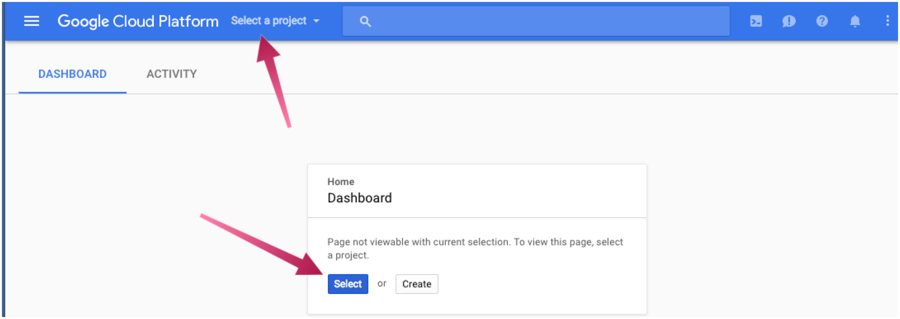
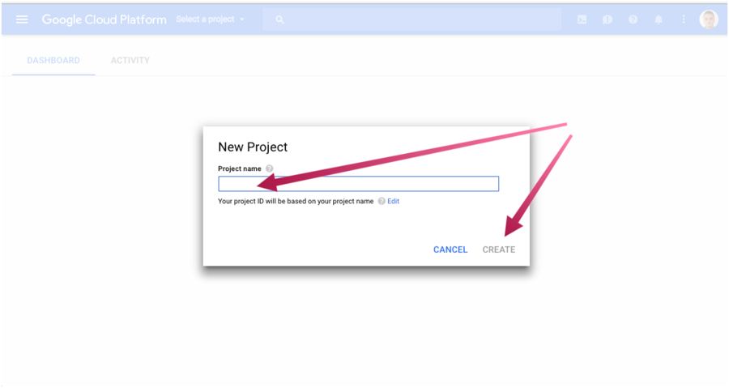

Google Home Guide
Learn to make a Goole action using Grails
Authors: Ryan Vanderwerf, Sergio del Amo
Grails Version: 4
1 Grails Training
Apache Grails Training
Apache Grails is now part of the Apache Software Foundation. The community-maintained training catalog is being migrated; in the meantime see the Learning page for current resources, recorded talks, and links to other community-supplied training material.
2 Getting Started
In this guide you are going to learn how to create a Grails application to host a Google Action for your Google Home device to interact with. We will build, deploy, and set up everything necessary to facilitate this on Google App Engine Flexible and Google APIs.
We will be using the early access unofficial Java SDK to build actions. This is because the only official SDK is built with node.
2.1 What you will need
-
Some time on your hands
-
A decent text editor or IDE
-
A Google account
-
A Google Cloud account
-
curl command to help debugging
2.2 How to complete the guide
To get started do the following:
-
Download and unzip the source
or
-
Clone the Git repository:
git clone https://github.com/grails-guides/grails-google-home.git
The Grails guides repositories contain two folders:
-
initialInitial project. Often a simple Grails app with some additional code to give you a head-start. -
completeA completed example. It is the result of working through the steps presented by the guide and applying those changes to theinitialfolder.
To complete the guide, go to the initial folder
-
cdintograils-guides/grails-google-home/initial
and follow the instructions in the next sections.
You can go right to the completed example if you cd into grails-guides/grails-google-home/complete
|
The initial project is a Grails Application built with the web profile where we removed the asset-pipeline and hibernate depenencies.
Although you can go right to the completed example, in order to deploy the app you would need to complete several configuration steps Google Cloud Settings.
You will need to edit the file src/main/resources/action.json to point to your Google App Engine Flexible deployment.
3 Google Cloud Settings
| This guide uses paid services; you may need to enable Billing in Google Cloud to complete some steps in this guide. |
3.1 Create a Google Cloud Project
Signup for Google Cloud Platform and create a new project:


Install Cloud SDK for your operating system.
After you have installed the SDK, run the init command in your terminal:
$ gcloud initIt will prompt you to select the Google account and the project which you want to use.
3.2 Install gactions CLI
We will use gactions CLI to test our app.
Go to gactions CLI and download it:

Make the gactions binary executable (chmod +x on linux and OSX).
After you have installed gactions, run the init command in your terminal:
$ gactions init --forceOther commands you can run: preview, update, deploy, test, and list.
3.3 Configure Google Actions

Import your Project to the Google Actions Console
Go to the new Google Actions Console and import the project your previoulsy created:

Configure your project ID in action.json
action.json is a metadata file which we use to inform the Google Cloud Actions Console about the
actions supported by our application.
Here you can also control:
-
sample queries to help google understand which action to call
-
intent to call
link:../snippets/src/main/resources/action.json[role=include]As shown above, our app supports two actions. We explain those actions with more detail in the next sections of this guide.
We will need to modify the httpExecution items to match your deployed application endpoints.
"url": "https://PROJECT_ID.appspot.com/assistantAction/index"Add Actions to your assistant app
The first time you select a project in the Google Cloud Actions Console, you will need to supply the action package JSON via the gactions tool like so:

gactions update --action_package src/main/resources/action.json --project PROJECT_IDFollow the instructions prompted by the above command. It involves an authorization process.
At the end you will see an output similar to:
Your app for the Assistant for project PROJECT_ID was successfully updated with your actions. Visit the Actions on Google console to finish registering your app and submit it for review at https://console.actions.google.com/project/PROJECT_ID/overviewAdd App Information
After you actions package has been validated, you will be able to enter directory information such as images, privacy policy, and descriptions. Here you can also pick the voice of the speaker in your skill.


The previous screenshots display two buttons. Test and Submit. We will click the Test in the previous screenshots once we have deployed our app to Google App Engine Flexible and we are ready to test our actions.
3.4 Google App Engine
We are going to deploy the Grails application developed in this guide to the Google App Engine Flexible Environment
App Engine allows developers to focus on doing what they do best: writing code. Based on Google Compute Engine, the App Engine flexible environment automatically scales your app up and down while balancing the load. Microservices, authorization, SQL and NoSQL databases, traffic splitting, logging, versioning, security scanning, and content delivery networks are all supported natively.
Run the command:
$ gcloud app createto initialize an App Engine application within the current Google Cloud project.
4 Writing the Application
4.1 Handle Request from Google in Grails
We name our app color finder. We want to achieve the scenario pictured below:

First, we are going to add a dependency to Google Actions Java SDK
link:../snippets/build.gradle[role=include]The illustrated conversation is managed with the handlers. We instantiate the handlers with factories. Add the next classes to your app:
link:../snippets/src/main/groovy/demo/MainRequestHandlerFactory.groovy[role=include]link:../snippets/src/main/groovy/demo/MainRequestHandler.groovy[role=include]link:../snippets/src/main/groovy/demo/MainRequestHandler.groovy[role=include]link:../snippets/src/main/groovy/demo/TextRequestHandlerFactory.groovy[role=include]link:../snippets/src/main/groovy/demo/TextRequestHandler.groovy[role=include]We are going to handle the request that come from Google in a Grails Controller:
A controller fulfills the C in the Model View Controller (MVC) pattern and is responsible for handling web requests. In Grails a controller is a class with a name that ends in the convention "Controller" and lives in the grails-app/controllers directory.
The Grails Controller, in turn, will delegate to Actions SDK.
link:../snippets/grails-app/controllers/demo/AssistantActionController.groovy[role=include]
link:../snippets/grails-app/controllers/demo/AssistantActionController.groovy[role=include]
link:../snippets/grails-app/controllers/demo/AssistantActionController.groovy[role=include]
link:../snippets/grails-app/controllers/demo/AssistantActionController.groovy[role=include]
link:../snippets/grails-app/controllers/demo/AssistantActionController.groovy[role=include]
link:../snippets/grails-app/controllers/demo/AssistantActionController.groovy[role=include]| 1 | We can chain handlers |
| 2 | Grails action delegates to Actions SDK to handle requests that come from Google. |
| 3 | We do not want to return a grails view. The handlers manage the response |
Add GrailsResponseHandler to your project. As illustrated above, it allow us to use a controller to process the incoming requests.
link:../snippets/src/main/groovy/demo/GrailsResponseHandler.groovy[role=include]4.2 Color Handler
To honor our app’s name we want to handle the next scenario as well:

Similar to the previous example. We need a handler and a factory to instantiate the handler.
This handler demonstrates passing a verbal parameter into the intent. When the user asks for a brighter color for X it will try to find a brighter color with a name and say it to the user.
link:../snippets/src/main/groovy/demo/ColorRequestHandlerFactory.groovy[role=include]link:../snippets/src/main/groovy/demo/ColorRequestHandler.groovy[role=include]We are going to handle the request that come from Google in another action of our controller:
link:../snippets/grails-app/controllers/demo/AssistantActionController.groovy[role=include]
link:../snippets/grails-app/controllers/demo/AssistantActionController.groovy[role=include]
link:../snippets/grails-app/controllers/demo/AssistantActionController.groovy[role=include]
link:../snippets/grails-app/controllers/demo/AssistantActionController.groovy[role=include]
link:../snippets/grails-app/controllers/demo/AssistantActionController.groovy[role=include]
link:../snippets/grails-app/controllers/demo/AssistantActionController.groovy[role=include]| 1 | Instantiate the handler with the help of the factory |
| 2 | Grails action delegates to Actions SDK to handle requests that come from Google. |
| 3 | We do not want to return a grails view. The handlers manage the response |
Let’s use a simple utility class to make our action do something interesting. This will help us map a given java.awt.Color to give us a english name for it.
link:../snippets/src/main/groovy/demo/util/ColorUtils.java[role=include]Previous class is a Java Class. Grails allows us to mix Groovy and Java code seamlessly.
4.3 Unofficial Google Actions Java SDK
The SDK is at https://github.com/frogermcs/Google-Actions-Java-SDK however all we need to do is edit our build.gradle to include the library.
link:../snippets/build.gradle[role=include]4.4 Google App Engine Gradle Plugin
To deploy to App Engine, we are going to use the Google App Engine Gradle Plugin.
We need to modify build.gradle, add the plugin as a buildscript dependency and apply the plugin:
buildscript {
repositories {
mavenLocal()
maven { url "https://repo.grails.org/grails/core" }
}
dependencies {
classpath "org.grails:grails-gradle-plugin:$grailsVersion"
classpath 'com.google.cloud.tools:appengine-gradle-plugin:1.1.1'
}
}
...
apply plugin: 'com.google.cloud.tools.appengine'4.5 Application Deployment Configuration
To deploy to Google App Engine, we need to add the file src/main/appengine/app.yaml
It describes the application’s deployment configuration:
link:{sourceDir}/src/main/appengine/app.yaml[role=include]Here, app.yaml specifies the runtime used by the app, and sets env: flex,
specifying that the app uses the flexible environment.
The minimal app.yaml application configuration file shown above is sufficient for a simple Grails application.
Depending on the size, complexity, and features that your application uses, you may need to change and extend this basic
configuration file. For more information on what can be configured via app.yaml, please see the
Configuring Your App with app.yaml
guide.
|
For more information on how the Java runtime works, see Java 8 / Jetty 9.3 Runtime.
4.6 SpringBoot Jetty
As shown in the previous app engine configuration file, we are using Jetty.
Following SpringBoot’s documentation, we need to do the following changes to deploy to Jetty instead of Tomcat
Replace tomcat:
provided 'org.springframework.boot:spring-boot-starter-tomcat'with jetty:
link:{sourceDir}/build.gradle[role=include]We need to exclude the tomcat-juli dependency as well. Add:
link:{sourceDir}/build.gradle[role=include]4.7 Deploying the App
To deploy the app to Google App Engine run:
$ ./gradlew appengineDeployInitial deployment may take a while. When finished, you will be able to access your app.
5 Test
5.1 Test and interact with your Google Action
Once your app is deployed in Google App Engine Flexible, you can test it.
Go back to the Google Actions Console and click test.


Try to test out your actions with the following phrases:
Ask to Grails Color Finder to find a brighter color for magenta
You should see the response:
Sure, here is the test version of Grails Color Finder The brighter color for magenta is fuchsia"

Let’s try another:
talk to Grails Color Finder
You’ll see:
Sure, here is the test version of Grails Color Finder Hey, it works! Now tell something so I could repeat it.
Now respond with something:
Grails is awesome
You should see it echo back what you entered:
You just told: Grails is awesome

Now you can make a more rich skill, and when you are ready go to the Google API dashboard, fill in the directory listing and submit it for testing.